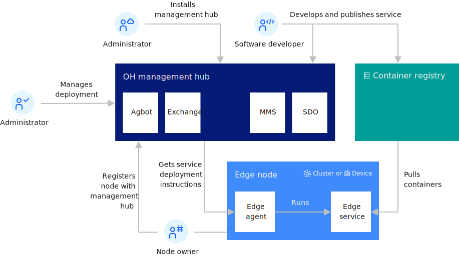

This section provides an overview of Open Horizon (OH).
Open Horizon provides you with edge computing features to help you manage and deploy workloads from a management hub cluster to edge devices and remote instances of OpenShift Container Platform or other Kubernetes-based clusters.
The goal of edge computing is to harness the disciplines that have been created for hybrid cloud computing to support remote operations of edge computing facilities. Open Horizon is designed for that purpose.
The deployment of Open Horizon includes the management hub that runs in an instance of OpenShift Container Platform installed in your data center. The management hub is where the management of all of your remote edge nodes (edge devices and edge clusters) occurs.
These edge nodes can be installed in remote on-premises locations to make your application workloads local to where your critical business operations physically occur, such as at your factories, warehouses, retail outlets, distribution centers, and more.
The following diagram depicts the high-level topology for a typical edge computing setup:

The Open Horizon management hub is designed specifically for edge node management to minimize deployment risks and to manage the service software lifecycle on edge nodes fully autonomously. A Cloud installer installs and manages the Open Horizon management hub components. Software developers develop and publish edge services to the management hub. Administrators define the deployment policies that control where edge services are deployed. Open Horizon handles everything else.
Open Horizon (Open Horizon) includes several components that are bundled with the product. The following table provides a description of the Open Horizon components:
| Component | Version | Description |
|---|---|---|
| Open Horizon management hub | 4.2.0 | The Open Horizon management hub manages the edge nodes and the edge service software lifecycle on each edge node. |
| Agbot | 2.27.0 | Agreement bot (agbot) instances are created centrally and are responsible for deploying workloads and machine learning models to Open Horizon edge nodes. |
| Exchange | 2.54.0 | The Exchange provides a REST API to all of the Open Horizon resources (patterns, policies, services, nodes, and so on) used by all the other components in Open Horizon. |
| MMS | 1.4.1 | The Model Management System (MMS) facilitates the storage, delivery, and security of models and files needed by edge services. This enables edge nodes to easily send and receive models and files to and from the management hub. |
| SDO | 1.8.6 | The Secure Device Onboarding (SDO) service enables SDO-enabled edge devices to be configured with zero touch. |
| Secrets Manager | 1.0.0 | The Secrets Manager is the repository for secrets deployed to edge devices, enabling services to securely receive credentials used to authenticate to their upstream dependencies. |
| Edge node | Any edge device, edge cluster, or edge gateway where edge computing takes place. | |
| Edge cluster agent | 2.27.0 | The agent that is installed on edge clusters to enable node workload management by Open Horizon. |
| Edge device agent | 2.27.0 | The agent that is installed on edge devices to enable node workload management by Open Horizon. |
| ESS | 1.4.1 | The edge node part of MMS that makes AI models and files available to the edge services. |
| Example edge services | 2.27.0 | Edge service examples that are useful when exploring Open Horizon and learning how to write your own services. |
For more information about using Open Horizon and developing edge services, review the topics that are listed in Open Horizon (Open Horizon) Welcome page